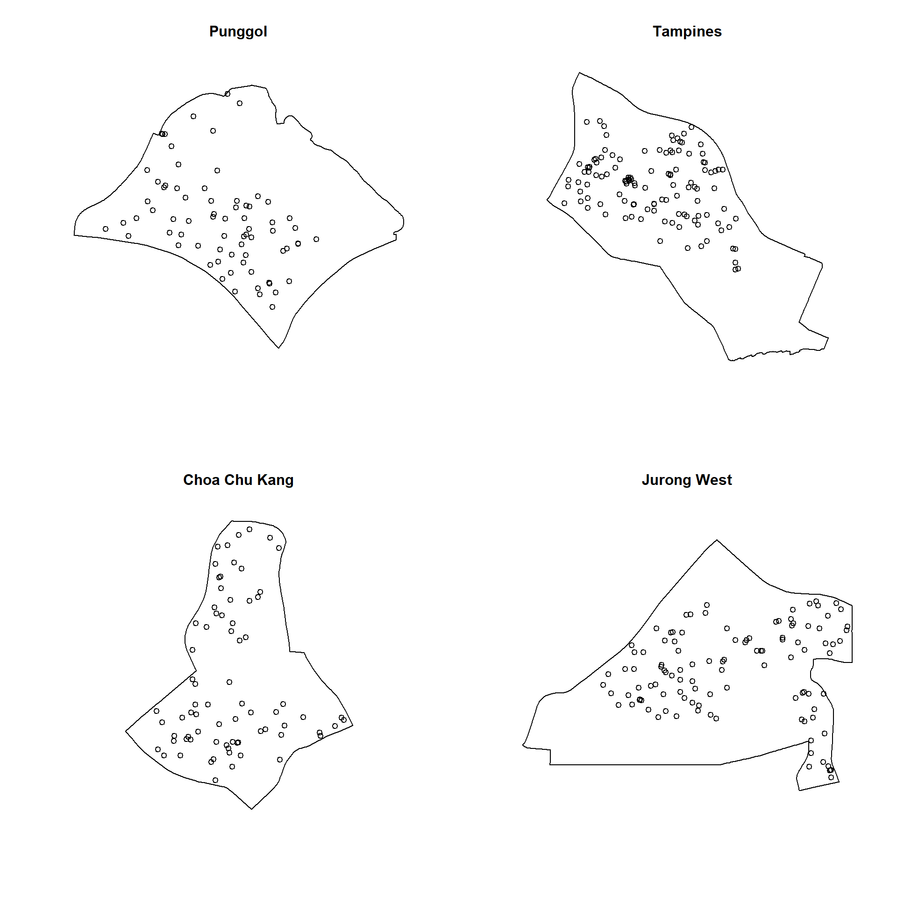
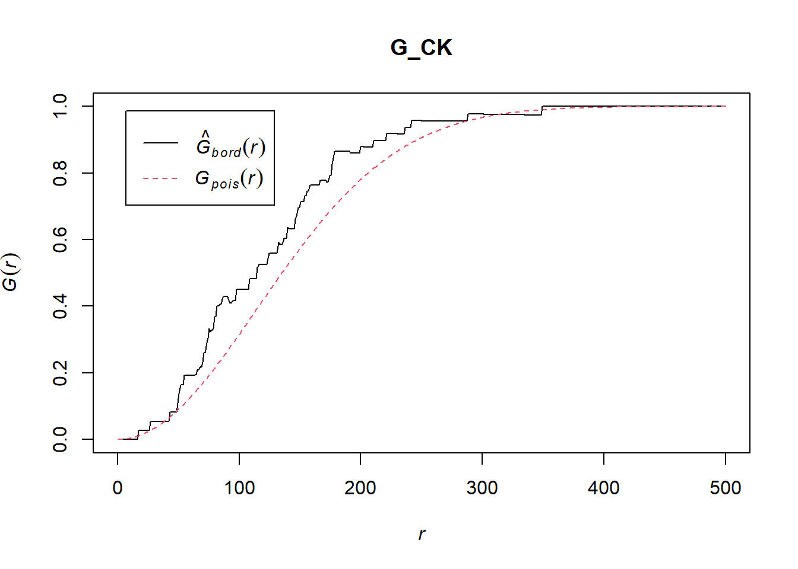
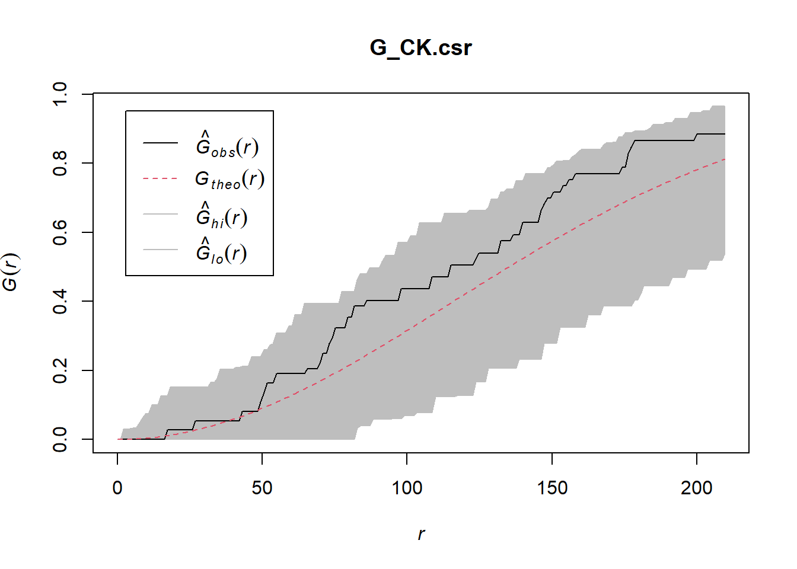
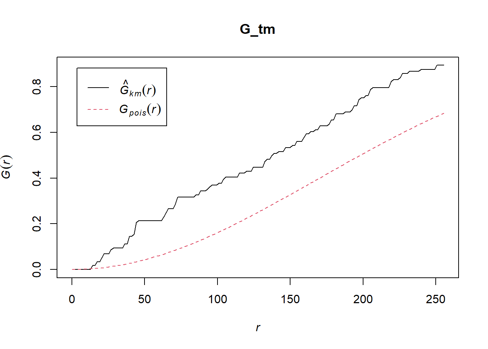
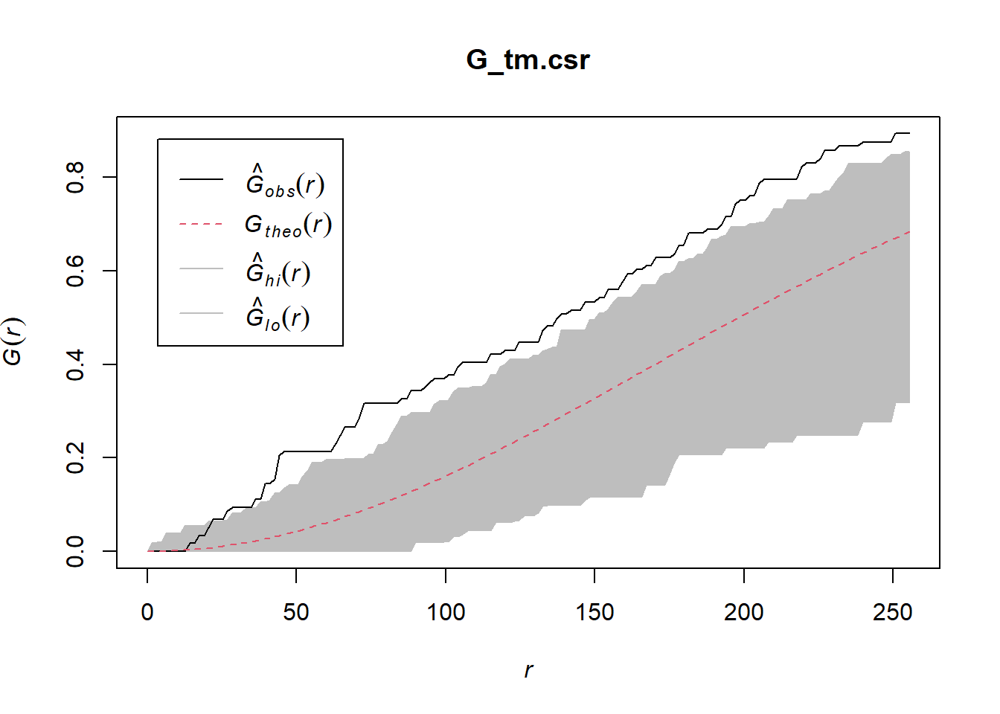

pacman::p_load(sf, spatstat, tmap, tidyverse)Hands-on Exercise 2B: Second-order Spatial Point Pattern Analysis (2nd-SPPA)
1 Overview
Second-order Spatial Point Pattern Analysis (2nd-SPPA) examines the spatial relationships between points in a pattern, specifically focusing on how the presence of one point influences the location of others. It goes beyond simply describing the overall density of points (first-order effects) by investigating clustering, dispersion, or randomness at various spatial scales.
This exercise uses spatstat to discover the spatial point processes of childcare centres in Singapore, and will focus on two specific questions:
- Are the childcare centres in Singapore randomly distributed throughout the country?
- If the answer is not, then the next logical question is: where are the locations with higher concentration of childcare centres?
2 The Data
Two data sets are used for this exercise:
| Dataset | Format | Source | Description |
|---|---|---|---|
| Child Care Services | GeoJSON | data.gov.sg | Point feature data providing the location and attribute information of childcare centres in Singapore. |
| Master Plan 2019 Subzone Boundary (No Sea) | GeoJSON | data.gov.sg | Polygon feature data providing the URA 2019 Master Plan Planning Subzone boundaries. |
Both data sets are the same as those used in Hands-on Exercise 2A, which covers 1st-order SPPA.
3 Installing and Loading the R packages
Four R packages will be used for this exercise:
| Package | Purpose | Use Case in Exercise |
|---|---|---|
| sf | Imports, manages, and processes vector-based geospatial data. | Handling vector geospatial data in R. |
| spatstat | Provides tools for point pattern analysis. | Performing 1st-order spatial point pattern analysis and deriving kernel density estimation (KDE). |
| tmap | Creates static and interactive thematic maps using cartographic-quality elements. | Plotting the KDE surface as a static map, and the childcare point locations as an interactive map via leaflet. |
| tidyverse | Family of R packages for modern data science (data manipulation, transformation). | Data wrangling and manipulation with mutate(), filter(), and pipe operators throughout the exercise. |
The code chunk below installs and loads the four R packages:
4 Data Import and Preparation
Data import and preparation for this exercise reuse the objects prepared in Hands-on Exercise 2A: the cleaned boundary data (mpsz_cl) and the jittered childcare point pattern (childcare_ppp_jit). Both were saved there as .rds files and copied into this exercise’s own data folder. Full details of the import, CRS transformation, and jittering steps are available under the following Hands-on Exercise 2A sections:
The code chunk below loads both objects, then extracts the same four planning areas used in Hands-on Exercise 2A — Punggol, Tampines, Choa Chu Kang, and Jurong West:
mpsz_cl <- read_rds("data/mpsz_cl.rds")
childcare_ppp_jit <- read_rds("data/childcare_ppp_jit.rds")
pg <- mpsz_cl %>% filter(PLN_AREA_N == "PUNGGOL")
tm <- mpsz_cl %>% filter(PLN_AREA_N == "TAMPINES")
ck <- mpsz_cl %>% filter(PLN_AREA_N == "CHOA CHU KANG")
jw <- mpsz_cl %>% filter(PLN_AREA_N == "JURONG WEST")
pg_owin <- as.owin(pg)
tm_owin <- as.owin(tm)
ck_owin <- as.owin(ck)
jw_owin <- as.owin(jw)
childcare_pg_ppp <- childcare_ppp_jit[pg_owin]
childcare_tm_ppp <- childcare_ppp_jit[tm_owin]
childcare_ck_ppp <- childcare_ppp_jit[ck_owin]
childcare_jw_ppp <- childcare_ppp_jit[jw_owin]The four planning areas are plotted below to confirm the extraction:
par(mfrow = c(2, 2))
plot(unmark(childcare_pg_ppp), main = "Punggol")
plot(unmark(childcare_tm_ppp), main = "Tampines")
plot(unmark(childcare_ck_ppp), main = "Choa Chu Kang")
plot(unmark(childcare_jw_ppp), main = "Jurong West")
The following sections compute G-, F-, K-, and L-functions for the Choa Chu Kang and Tampines planning areas, each accompanied by a Monte Carlo simulation test of Complete Spatial Randomness (CSR).
5 Analysing Spatial Point Process Using G-Function
The G-function measures the distribution of distances from an arbitrary point to its nearest neighbouring point. This section computes the G-function using Gest() of spatstat, and tests it against Complete Spatial Randomness using envelope().
5.1 Choa Chu Kang Planning Area
5.1.1 Computing G-function Estimation
The code chunk below computes the G-function using Gest() of spatstat:
G_CK <- Gest(childcare_ck_ppp, correction = "border")
plot(G_CK, xlim = c(0, 500))
NoteInterpretation
The plot shows two lines: the empirical G-function (black line), representing the actual cumulative distribution of nearest-neighbour distances observed among childcare centres in Choa Chu Kang, and the theoretical CSR G-function (pink dashed line), representing the expected distribution if childcare centres were randomly distributed with no clustering or dispersion.
The black line lies consistently above the pink line across the observed range of distances. Since the G-function measures the proportion of points with a nearest neighbour within a given distance, a higher curve means shorter nearest-neighbour distances overall. This indicates that childcare centres in Choa Chu Kang tend to have another centre nearby more often than random chance would predict — consistent with a clustered spatial pattern. This matches the earlier Clark-Evans result for Choa Chu Kang (R = 0.892) in Hands-on Exercise 2A.
5.1.2 Performing Complete Spatial Randomness Test
To confirm the observed spatial patterns above, a hypothesis test is conducted:
- H0: The distribution of childcare centres in Choa Chu Kang is randomly distributed.
- H1: The distribution of childcare centres in Choa Chu Kang is not randomly distributed.
The null hypothesis will be rejected if the p-value is smaller than the alpha value of 0.001.
A Monte Carlo simulation test is performed using envelope() of spatstat:
set.seed(123)
G_CK.csr <- envelope(childcare_ck_ppp, Gest, nsim = 999)Generating 999 simulated realisations of CSR ...
1, 2, 3, ......10.........20.........30.........40.........50.........60..
.......70.........80.........90.........100.........110.........120.........130
.........140.........150.........160.........170.........180.........190........
.200.........210.........220.........230.........240.........250.........260......
...270.........280.........290.........300.........310.........320.........330....
.....340.........350.........360.........370.........380.........390.........400..
.......410.........420.........430.........440.........450.........460.........470
.........480.........490.........500.........510.........520.........530........
.540.........550.........560.........570.........580.........590.........600......
...610.........620.........630.........640.........650.........660.........670....
.....680.........690.........700.........710.........720.........730.........740..
.......750.........760.........770.........780.........790.........800.........810
.........820.........830.........840.........850.........860.........870........
.880.........890.........900.........910.........920.........930.........940......
...950.........960.........970.........980.........990........
999.
Done.plot(G_CK.csr)
NoteInterpretation
The observed G-function (black line) stays within the simulation envelope (grey band) for shorter distances, but rises above the upper envelope bound for larger distances (roughly beyond r = 130–150). This suggests that at these greater distances, childcare centres in Choa Chu Kang are spaced more closely together than 999 simulations of Complete Spatial Randomness would typically produce — a pattern consistent with clustering.
5.2 Tampines Planning Area
5.2.1 Computing G-function Estimation
The code chunk below computes the G-function for Tampines:
G_tm <- Gest(childcare_tm_ppp, correction = "best")
plot(G_tm)
TipCorrection methods for Gest()
Gest() supports several edge-correction methods via the correction argument. In the previous example, Choa Chu Kang used correction = "border", a straightforward method that excludes points too close to the study area boundary. This section uses correction = "best" instead, which lets spatstat automatically select the most appropriate correction for the given data.
NoteInterpretation
The black line lies consistently above the pink line across the observed range of distances, and the gap between them is noticeably wider than in the Choa Chu Kang plot. This indicates that childcare centres in Tampines tend to have another centre nearby more often than random chance would predict — a pattern consistent with clustering. The wider gap also suggests stronger clustering in Tampines than in Choa Chu Kang, matching the lower (more clustered) Clark-Evans R-value for Tampines (R = 0.690) versus Choa Chu Kang (R = 0.892) from Hands-on Exercise 2A.
5.2.2 Performing Complete Spatial Randomness Test
To confirm the observed spatial patterns above, a hypothesis test is conducted:
- H0: The distribution of childcare centres in Tampines is randomly distributed.
- H1: The distribution of childcare centres in Tampines is not randomly distributed.
The null hypothesis is rejected if the p-value is smaller than the alpha value of 0.001.
A Monte Carlo simulation test is performed using envelope() of spatstat:
set.seed(123)
G_tm.csr <- envelope(childcare_tm_ppp, Gest, correction = "all", nsim = 999)Generating 999 simulated realisations of CSR ...
1, 2, 3, ......10.........20.........30.........40.........50.........60..
.......70.........80.........90.........100.........110.........120.........130
.........140.........150.........160.........170.........180.........190........
.200.........210.........220.........230.........240.........250.........260......
...270.........280.........290.........300.........310.........320.........330....
.....340.........350.........360.........370.........380.........390.........400..
.......410.........420.........430.........440.........450.........460.........470
.........480.........490.........500.........510.........520.........530........
.540.........550.........560.........570.........580.........590.........600......
...610.........620.........630.........640.........650.........660.........670....
.....680.........690.........700.........710.........720.........730.........740..
.......750.........760.........770.........780.........790.........800.........810
.........820.........830.........840.........850.........860.........870........
.880.........890.........900.........910.........920.........930.........940......
...950.........960.........970.........980.........990........
999.
Done.plot(G_tm.csr)